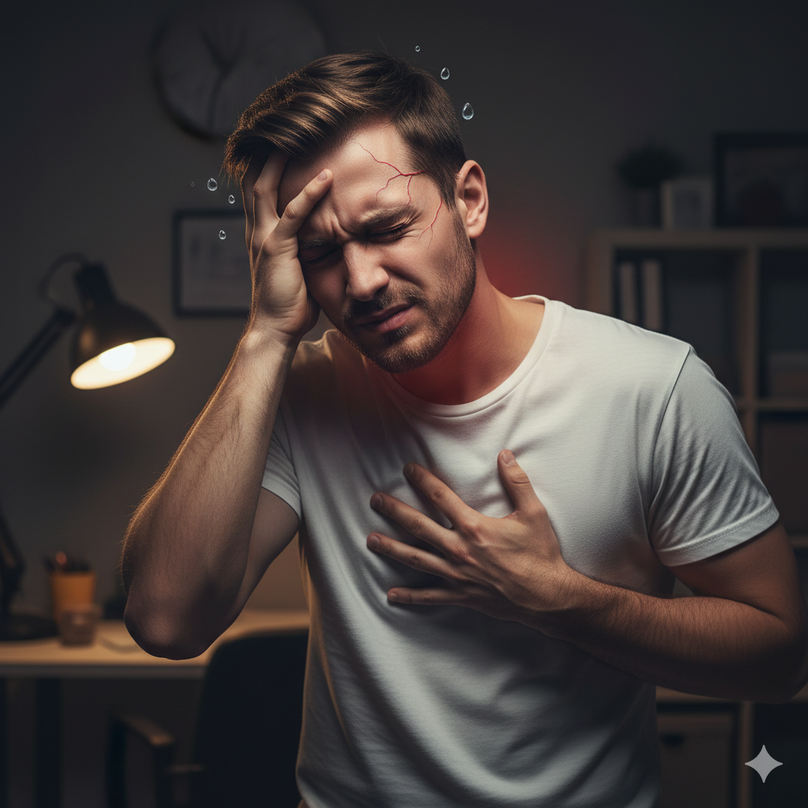
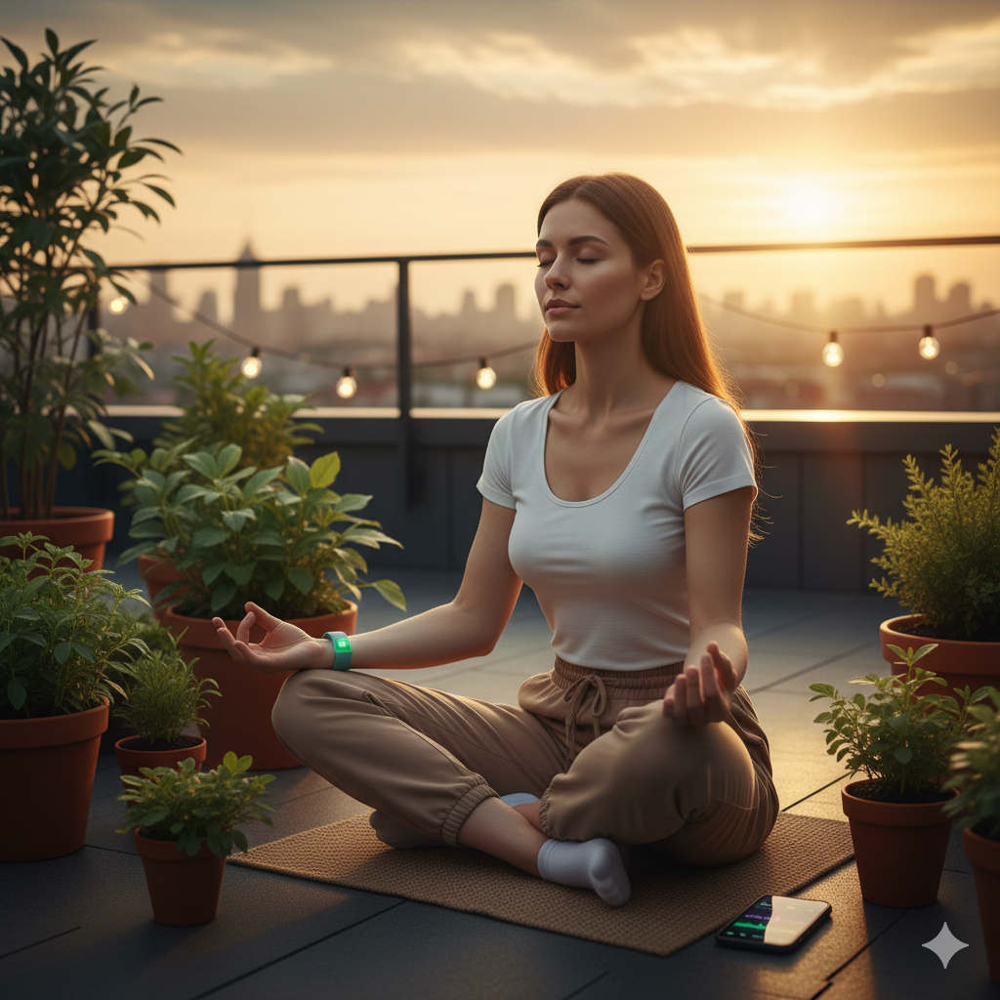

Inicio
El estrés es una respuesta natural del cuerpo ante situaciones desafiantes, pero cuando se vuelve crónico, puede afectar negativamente el desempeño académico de los estudiantes. En esta página, exploraremos cómo detectar y reducir los niveles de estrés en estudiantes de 3ro de bachillerato del Colegio Dolores Sucre. Aprenderemos sobre señales fisiológicas, indicadores emocionales y estrategias efectivas para manejarlo.
Señales Fisiológicas
Las señales fisiológicas son manifestaciones físicas del estrés. Algunos ejemplos incluyen:
- Dolor de cabeza frecuente.
- Insomnio o dificultades para dormir.
- Fatiga crónica.
- Problemas digestivos como náuseas o dolor de estómago.
- Tensión muscular, especialmente en el cuello y hombros.
🔹 Síntomas fisiológicos físicos
Estos son cambios en el cuerpo que ocurren cuando se activa la respuesta de estrés (sistema nervioso y hormonas):
1. Sistema cardiovascular:
Aumento de la frecuencia cardíaca (palpitaciones, taquicardia).
Aumento de la presión arterial.
2. Sistema musculoesquelético:
Tensión muscular, dolor o rigidez en cuello, hombros y espalda.
Temblor o sacudidas corporales leves.
3. Respiratorio:
Respiración más rápida o dificultad para respirar.
4. Respuesta cutánea:
Sudoración excesiva, especialmente en manos y pies.
Piel pálida por constricción de vasos.
5. Sistema digestivo:
Molestias estomacales: dolor, náuseas, indigestión, diarrea o estreñimiento.
Cambios de apetito (aumento o disminución).
6. Otras reacciones corporales:
Sequedad en la boca.
Dolores de cabeza frecuentes (por tensión).
Fatiga o sensación de agotamiento.
Si experimentas estas señales, es importante buscar formas de relajarte y consultar con un profesional si persisten.
Indicadores Emocionales
Los indicadores emocionales del estrés afectan el estado de ánimo y el comportamiento. Incluyen:
- Irritabilidad o enojo frecuente.
- Ansiedad o preocupación constante.
- Tristeza o depresión.
- Dificultad para concentrarse.
- Sentimientos de abrumamiento.
Reconocer estos indicadores es el primer paso para gestionar el estrés de manera efectiva.
🧠 Indicadores emocionales comunes del estrés
1. Irritabilidad o cambios de humor
Las personas bajo estrés suelen mostrarse más irritables, con menor tolerancia a la frustración o con cambios bruscos de humor.
2. Ansiedad o preocupación excesiva
Sentir preocupación persistente, nerviosismo o anticipación negativa es un indicador emocional fuerte del estrés.
3. Sensación de agobio o incapacidad para afrontar
Una persona estresada puede sentir que no puede manejar sus tareas o emociones, sensación de “estar sobrepasado”.
4. Baja tolerancia emocional
Mayor susceptibilidad a sentir tristeza, frustración o enojo incluso por estímulos menores.
5. Ansiedad anticipatoria
Preocupación continuada por eventos futuros o consecuencias, incluso sin evidencia concreta.
Fuente: National Institute of Mental Health.
Estrategias de Reducción de Estrés
Existen varias estrategias para reducir el estrés. Aquí algunas efectivas:
- Ejercicio físico regular, como caminar o practicar deportes.
- Técnicas de relajación, como meditación o respiración profunda.
- Organización del tiempo y establecimiento de prioridades.
- Hablar con amigos, familiares o un consejero.
- Actividades recreativas, como hobbies o escuchar música.
Reducir el estrés es importante para la salud física y emocional, y hay evidencias claras de por qué hacerlo mejora la calidad de vida. A continuación te explico los motivos respaldados por fuentes confiables:
🧠 1. Mejora la salud mental:
El estrés crónico está vinculado a altos niveles de ansiedad, tristeza persistente y agotamiento emocional.
Reducir el estrés ayuda a estabilizar el estado de ánimo y disminuye el riesgo de desarrollar trastornos de ansiedad o depresión.
❤️ 2. Protege el corazón y la presión arterial:
Cuando el cuerpo está estresado, libera hormonas como adrenalina que aumentan la frecuencia cardíaca y la presión arterial.
El estrés prolongado puede elevar el riesgo de hipertensión y enfermedades cardiovasculares.
💪 3. Fortalece el sistema inmunológico:
El estrés prolongado debilita el sistema inmunológico, haciendo al cuerpo más vulnerable a infecciones y enfermedades.
Reducir el estrés puede mejorar la respuesta inmunitaria.
🧠 4. Mejora la concentración y la memoria:
El estrés crónico afecta funciones cognitivas como la atención y la memoria.
Reducirlo puede ayudar a pensar con claridad y a rendir mejor en tareas diarias.
Implementa estas estrategias en tu rutina diaria para mejorar tu bienestar.
Glosario
- Estrés: Respuesta del cuerpo a presiones o demandas.
- Ansiedad: Sentimiento de preocupación o miedo intenso.
- Meditación: Práctica de concentración mental para reducir el estrés.
- Respiración profunda: Técnica para calmar el sistema nervioso.
- Desempeño académico: Rendimiento en actividades escolares.